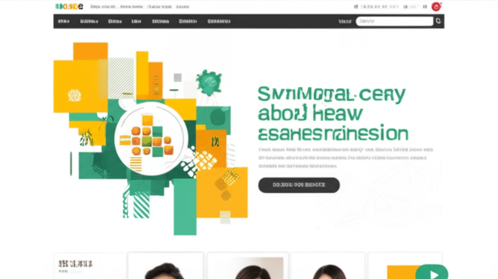

今日新聞聚焦健康議題，涵蓋飲食、疾病治療、以及醫療政策等多個面向。從夏季蔬菜的妙用，到危急病症的搶救，再到醫療給付的擴大，多項新聞反映了當前人們對健康的重視與醫療科技的進步。 本文將整理今日新聞中的幾個重點，方便讀者快速掌握健康新知。
新聞中提到黃瓜與楊桃兩種夏季水果。黃瓜具有降血壓、增強免疫力等功效，且用途廣泛。 然而，楊桃卻是腎臟病患者的禁忌，食用不當可能導致嚴重後果。 這提醒我們，即使是健康的食物，也應了解自身體質，謹慎選擇。
彰基醫院成功搶救一位罹患心肌病變的雙胞胎產婦，顯示了醫療團隊的專業能力與先進技術。 此外，還有關於高血壓導管治療的新聞，提供了一種控制血壓的新選擇。這些案例都說明了及早診斷、專科照護的重要性，以及醫療技術在挽救生命方面的重要作用。
健保制度將三大癌別的免疫療法納入第一線給付，這對於癌症患者來說是一項福音。 這不僅減輕了患者的經濟負擔，也提升了台灣癌症治療的水平，使其更接近國際指引標準。
綜觀今日的健康新聞，我們可以看到飲食健康、疾病治療和醫療政策都在不斷進步。 了解相關資訊，採取積極的預防措施，並適時尋求專業醫療協助，才能更好地維護自身健康。